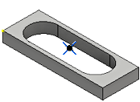

<div id="predrillPositions"><p>刃物が材料に進入するクリアランスを確保するために、穴がドリル加工されている点を選択します。</p>
<table class="tipTable" cellspacing="10">
<tr>
<td><center></center></td>
</tr><tr>
<td><center><p><b>下穴ドリル位置</b><br>
<em>ドリル済みの穴の位置を選択します。</em></p></center></td>
</tr></table>
<br>
<table class="tipTable" cellspacing="10">
<tr>
<td><center></center></td>
</tr><tr>
<td><center><p><b>下穴ドリル切込み開始</b><br>
<em>ツールパスは穴から始まります。</em></p></center></td>
</tr></table>
</div>